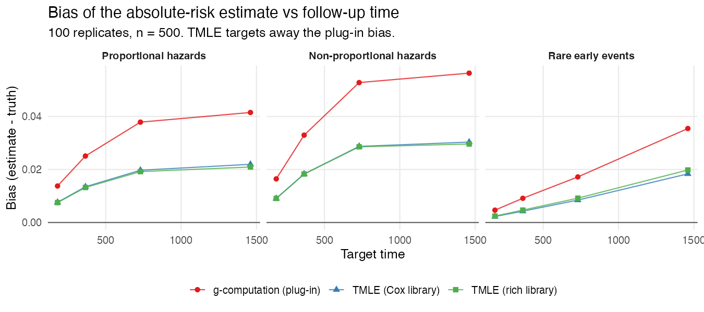
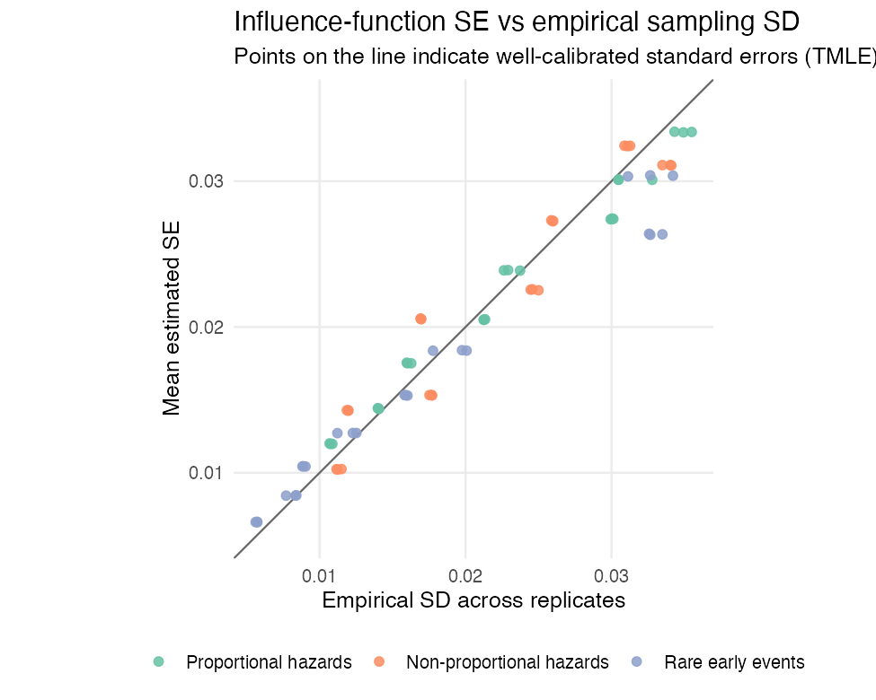
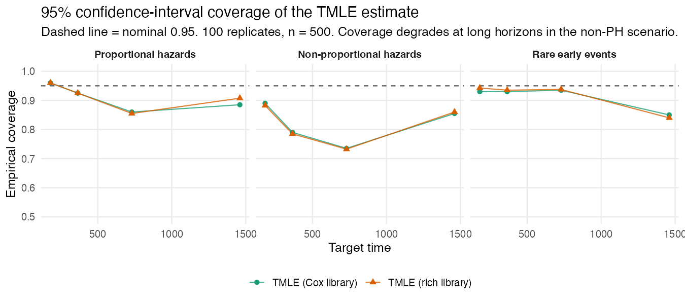
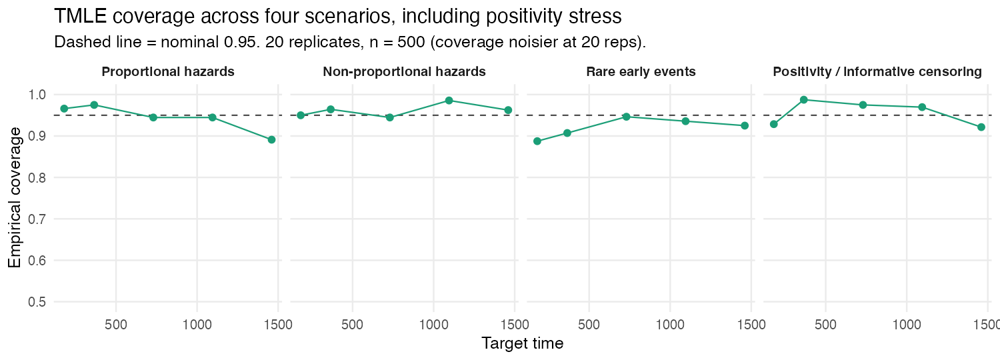
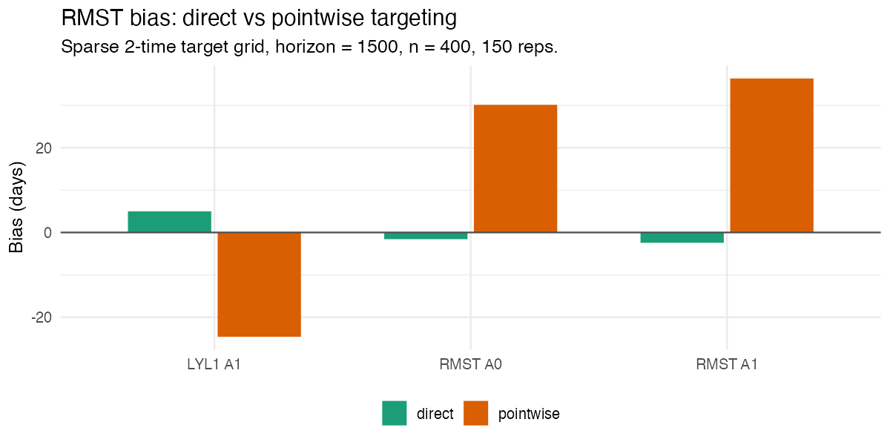
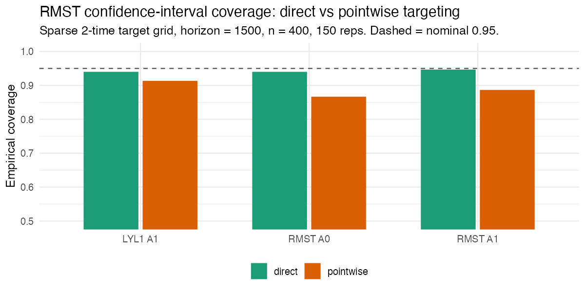

This article summarizes how concrete behaves in
simulations where the truth is known. The goal is to give a trial
analyst evidence on three questions:
- Does the targeting step actually reduce the bias of the plug-in estimate?
- Are the influence-function standard errors trustworthy?
- Do the confidence intervals cover the truth at the nominal rate?
The figures are generated from the package’s committed
referee-simulation results by
scripts/make-sim-evidence-figures.R; the simulations
themselves are in scripts/sim-data/referee-sims/ and are
reproducible from a fixed seed grid.
The scenarios
Each scenario simulates continuous-time data with two competing events plus censoring, a binary baseline treatment, and five baseline covariates. The headline figures use 100 replicates at n = 500.
| Scenario | What it stresses |
|---|---|
| Proportional hazards | Well-specified, Cox-compatible baseline |
| Non-proportional hazards | Time-varying treatment/covariate effects |
| Rare early events | Low early event rate, hard early target times |
| Positivity / informative censoring | Treatment imbalance and informative censoring |
Result 1: TMLE reduces the plug-in bias
The g-computation plug-in (red) inherits the bias of the hazard fit and drifts further from the truth as follow-up lengthens. The one-step TMLE update (blue, green) targets that bias away. Averaged over scenarios and target times, the mean absolute bias falls from about 0.029 for the plug-in to about 0.015 for TMLE — roughly a halving — and the two TMLE libraries (Cox-only vs a richer learner library) behave similarly here.

Result 2: the standard errors are well calibrated
A standard error is trustworthy if, across replicates, the mean estimated SE matches the empirical standard deviation of the point estimates. For the TMLE absolute-risk estimates these track the identity line closely — the mean ratio of estimated SE to empirical SD is about 1.01.

Result 3: coverage is near-nominal, with a caveat at long horizons
Coverage is close to the nominal 95% at short and medium target
times. At the longest horizons in the non-proportional-hazards
scenario it degrades: this is where a small residual
finite-sample bias is largest relative to the standard error, so the
interval is centered slightly off. This is the expected behavior of a
one-step estimator at finite n, and it is the practical reason to (a)
inspect getTmleDiagnostics(), (b) prefer a richer hazard
library when proportional hazards is implausible, and (c) interpret
very-long-horizon estimates cautiously.

Adding the positivity / informative-censoring scenario (20 replicates, so coverage is noisier) shows the same qualitative picture across all four settings:

Direct vs pointwise RMST targeting
concrete offers two ways to estimate the restricted mean
survival time: getRMST() integrates the pointwise-targeted
absolute risks, while targetRMST() fluctuates the hazards
to solve the RMST estimating equation directly (see the How concrete works article). The
simulation below uses exponential cause-specific hazards (so the true
RMST and life-years-lost have closed forms) and a deliberately
sparse two-time target grid, which is where the
difference shows up.
The direct method substantially reduces bias, because it integrates over the full event-time grid and targets the RMST functional itself rather than relying on a crude trapezoid of a few targeted risks:

That lower bias translates into confidence-interval coverage closer to nominal:

With a dense target grid the two approaches converge; the direct method is the one to prefer for sparse grids, rare events, and long horizons.
Takeaways for a trial analysis
- The targeting step is doing real work: it consistently reduces the plug-in bias, which is the reason to use TMLE rather than a plain g-formula plug-in.
- Influence-function standard errors are reliable, so the reported intervals are meaningful.
- Trust short-to-medium-horizon estimates most; at long horizons under likely non-proportional hazards, lean on the diagnostics and a flexible hazard library, and report the convergence status.
Reproducing these figures
# Re-plot from the committed simulation summaries (no simulation is run):
source("scripts/make-sim-evidence-figures.R")
# Re-run the simulations themselves (heavy; uses a fixed seed grid):
# see scripts/sim-data/referee-sims/run_pilot.R
# The direct-vs-pointwise RMST comparison (closed-form truth) is self-contained:
# Rscript scripts/make-rmst-comparison.R 150 400